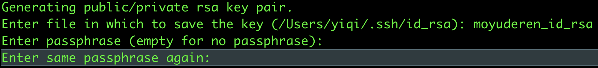
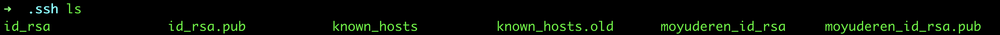
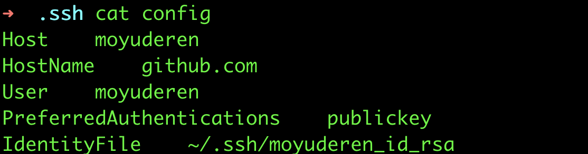
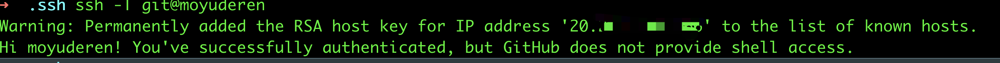

Git
本文最后更新于：2022-01-19 13:14:53
git操作
查看所有分支
git branch -a查看远程分支
git branch -r查看本地分支所关联的远程分支
git branch -vvgitk 查看分支情况 会打卡GUI界面
gitk
修改上次提交描述
git commit --amend
git修改本地和远程分支名称
1
2
3
4
5
6
7
8
9
10
11
12
# 本地分支重命名
git branch -m oldName newName
# 将重命名后的分支推送到远程
git push origin newName
# 注意： 把origin改为自己的名称（一般默认就为origin）
## 或者git push --set-upstream origin newName # 或者git push -u origin newName
# 删除远程的旧分支
git push origin :oldName
# 或者 git push --delete origin oldName
> 参考： [git 修改本地和远程分支名称](https://blog.csdn.net/zhangxiaoyang0/article/details/82454209)
> 参考： [Git分支重命名](https://juejin.cn/post/6893041983674122254)
.gitignore
- .gitignore不生效
git rm -f -r --cached .
feature分支开发，合并时解决冲突(防止污染分支代码或者线上代码)
fearure分支merge到develop分支冲突
1
2
3
4
5
6
7
8
9
10# 本地操作
git checkout develop
git pull ## 最新代码
git merge feature
## 解决冲突
#...
git add .
git commit -m 'ci: 解决冲突'
git pushfeature分支merge到master分支冲突
1
2
3
4
5
6
7
8
9
10
11# 本地操作
git checkout online
git pull ## 最新代码
git checkout feature # 切到开发分支
git merge master
## 解决冲突
#...
git add .
git commit -m 'ci: 解决冲突'
git push
git cherry pick
如果你在使用 git 进行多人协作的代码管理，合并代码（ git merge ）的操作你一定不陌生。 git merge 会将指定分支的所有提交历史合并到当前所在的分支，它的合并单位是“分支”。但有的时候，我只想取某个分支的某几个提交的内容来合并。
遇到这种操作需求，我们可以使用 cherry-pick 命令，它是以“提交”为单位的合并，可以帮助你安全快速地达到目的。
cherry-pick 命令官方介绍
git-cherry-pick 它可以在当前分支应用其他已经存在的 commit 修改，并对每一个合并过来的 commit 产生一个新的提交记录（commit hash）。
cherry-pick - Given one or more existing commits, apply the change each one introduces, recording a new commit for each.
cherry-pick 的使用
基本命令
指定任何本地分支上的某个存在的提交git cherry-pick <commitHash>
例如代码仓库有两个分支 dev 和 feat：1
2
3
4
a - b - c - d - e #dev
\
f - g - h - i #feat现在要将 feat 分支上的提交 g 应用到 dev 分支：
1
2git checkout dev
git cherry-pick g代码库的结构将变成：
1
2
3a - b - c - d - e - g‘ #dev
\
f - g - h - i #featdev 分支后面将会增加一个提交 g’，这个提交的 commit 信息跟 feat 分支的 g 提交默认是一样的（你可以在提交过程中用 -m 选项追加内容，或者在处理冲突之后在 –continue 的时候修改，不过大部分时候，使用默认的就可以），但是会产生一个新的 commitHash。
转移多个提交
多个不连续的提交，提交之间用空格相隔
git cherry-pick <commitHash1> <commitHash2>连续的提交（左开右闭），使用..注意中间没有任何空格
git cherry-pick <start-commitHash>..<end-commitHash>连续的提交（左闭右闭）给第一个提交右侧加上^符号
git cherry-pick <start-commitHash>^..<end-commitHash>
注：连续的提交命令中，start-commitHash 一定要是 end-commitHash 之前的提交，否则命令将会失败，但不会报错。
转移最顶端的提交
git cherry-pick <branchName>
会将指定分支的最后一次提交应用到当前分支。转移另一个代码库的提交
其实 cherry-pick 的奥义就是，只要是在一个.git仓库管理下的本地代码，任何提交都可以被应用到任何可访问的本地分支，哪怕是跨代码库：1
2
3
4git remote add repo2 git@xxx.git # 添加另一个代码库
git fetch repo2 # 抓取新代码库到本地
git log repo2/master # 查看新代码库master分支的提交记录
git cherry-pick <commitHashInRepo2> # 将新的代码库的某个提交应用到当前分支（跨代码库的合并）冲突处理
如果在cherry-pick的过程中，代码产生了冲突，cherry-pick 会停下来，等待我们的下一步操作决策。处理冲突。我们可以先将代码冲突在编辑器中处理好，然后回到命令行，使用 –countinue 参数让 cherry-pick 过程继续执行：
git cherry-pick --countinue放弃合并，代码回到操作前的样子
git cherry-pick --abort退出cherry-pick，但是代码不回到操作前的样子
git cheerry-pick --quitcherry-pick 的一些常用配置项
-n, –no-commit
只更新工作区和暂存区。不产生新的提交-x
在提交信息末尾追加一行（cherry picked from commit…）方便以后查到这个提交是如何产生的。-m parent-number, –mainline parent-number
如果原始分支是一个合并节点，那么 cherry-pick 默认会失败，因为不知道应该采用哪个分支的代码变动。 -m 配置项告诉 git 应该采用哪个分支分变动，parent-number 代表原始提交的父分支编号。git cherry-pick -m 1 <commitHash>
一般1号父分支是接受变动分支（the branch being merged into），2号父分支是作为变动来源的分支（the branch being merged from)。
参考
git revert用法
主要用途
revert 用于线上回滚代码
原理
- revert可以回滚指定提交，并产生一个新的提交
eg: revert_commit_id - 由于revert之后产生了相反的提交，原来的提交会丢失，所以要回复revert的提交，可以把
revert_commit_id再次revert
与reset区别
- 待完成
引用资料
实际如何操作
开发背景
主要分支
- main (线上主要分支)
- develop (测试分支)
- feature (开发分支)
情况1：feature分支合并到develop分支
- 可以直接在feature上进行bugfix然后重新合并到develop分支
- 也可以参考下面的revert方法
情况2：feature分支合并到了main分支（上线完成）;发现feature分支存在bug需要回滚代码
因为featue分支是通过merge的方式合并到main分支，所以会生成一个新的
merge_commit_id此时找到该
merge_commit_id在gitlab上使用revert功能回退代码新建一个revert分支
revert-62021261，再合并到main分支生成一个revert_62021261_merge_commit_id（代码回滚成功）恢复提交
1
2
3
4
5
6
7
8
9
10
11
12
13
14
15
16
17
18
19# 切换到main
git checkout main
git pull
git log // 找到revert_62021261_merge_commit_id
git revert -m 1 revert_62021261_merge_commit_id # 由于是通过新建revert-62021261合并生成的revert提交 需要参数 -m 1
# 中间可能存在冲突，解决玩冲突重新 git add . / git commit -m 'ci: conflict'
# 此时已经恢复到merge_commit_id状态
git checkout featue
# fixbug
git add .
git commit -m 'fix: bugfix'
git chekout main
git merge feature // 有冲突解决冲突
git push如果是revert的是一个合并节点
mgere_commit，该merge_commit就有两个parent, revert时git无法知道是恢复到哪个分支，所以会报错git revert -m 1 merge_commit
1代表当前分支，2代表合并过来的分支
没有创建新的分支，直接生成了revert_commit_id（代码回滚成功）
恢复提交（使用main分支）
1
2
3
4
5
6
7
8
9
10
11
12
13
14
15
16
17
18
19# 切换到main
git checkout main
git pull
git log # 找到revert_commit_id
git revert revert_commit_id # 相比较生成新分支的megre不需要 -m 1
# 中间可能存在冲突，解决玩冲突重新 git add . / git commit -m 'ci: conflict'
# 此时已经恢复到merge_commit_id状态
git checkout featue
# fixbug
git add .
git commit -m 'fix: bugfix'
git chekout main
git merge feature # 有冲突解决冲突
git push恢复提交（使用feature分支）
再次merge到main分支就可以了1
2
3
4
5
6
7
8
9
10
11
12
13
14
15
16# 本地
git checkout main
git pull
git chekout feature
git merge main
git log # 找到revert_commit_id
git revert revert_commit_id
# 恢复到了原来的状态
# fixbug
git add .
git commit -m 'fix: bugfix'
git push
直接在gitlab操作
1.找到
merge_commit_id使用revert回滚代码（不要使用新建revert-828929292分支的方式）生成一个先的revert_commit_id（回滚成功)2.要想恢复之前的提交 找到
revert_commit_id的提交，使用revert回滚代码（不使用新建revert-12773612分支的方式）生成一个revert_revert_commit_id（恢复成功）
参考文章
github多账号配置
操作步骤
- 首先进入.ssh目录
cd ~/.ssh - 生成公私钥
ssh-keygen -t rsa -C "moyuderen"
注意：到这一步时是对私钥进行命名，这里我命名为moyuderen_id_rsa
注意：到这一步时是设置密码，一路回车即可

成功：看到下面的样子就是生成公私钥成功了

使用ls会看到在.ssh目录下多出了 moyuderen_id_rsa和moyuderen_id_rsa.pub 一对公私钥

- 把moyuderen_id_rsa.pub里面的内容添加到github里即可(相信这一步都会的)
- 配置config文件
如果在~/.ssh目录下没有config文件，可以使用touch config创建，然后使用vim config编辑config文件（或者使用编辑器编辑）
编辑好的config文件内容

1 | |
- 因为系统默认只读取id_rsa，为了让ssh识别新的私钥，可以使用ssh-agent手动添加私钥
ssh-add ~/.ssh/moyuderen_id_rsa - 测试连接
ssh -T git@moyuderen
连接成功

注意：这里正常测试为ssh -T git@github.com;因为我们在config文件中配置了主机名称Host moyuderen所以用moyuderen代替了github.com, 才使用了 ssh -T git@moyuderen进行测试连接
- 拉取仓库代码进行测试
- 原本的操作
git clone git@github.com:moyuderen/git.git - 现在操作需要替换为
git clone git@moyuderen:moyuderen/git.git; 和配置的该账号主机名保持一致
- 设置该仓库提交人的信息（否则和全局冲突无法提交）
git config --local user.name yourusenamegit config --local user.email youremail
最后修改代码提交试试吧
参考文章
本博客所有文章除特别声明外，均采用 CC BY-SA 4.0 协议 ，转载请注明出处！